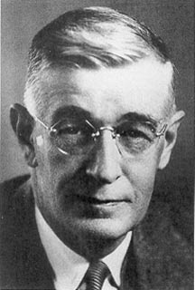

Exploring
the Internet
Vannevar Bush was part of a research committee during World War II where he played a vital role in envisioning a device that automatically manages information. He called this device REMEX. It is a concept that will inspire future scientists to actually build the device.
.jpeg) Back in 1962, it was J.C.R. Licklider of MIT who first thought of a network of machine that shares information on research and development, he wanted to pick where Bush left off. He went to the Defense Advanced Research Projects Agency (DARPA) to head this project. It started as a series of memos written by Licklider. He thought of a “Galactic world” concept when he thought of a globally interconnected set of computers. He called this massive network “Intergalactic Network”
Back in 1962, it was J.C.R. Licklider of MIT who first thought of a network of machine that shares information on research and development, he wanted to pick where Bush left off. He went to the Defense Advanced Research Projects Agency (DARPA) to head this project. It started as a series of memos written by Licklider. He thought of a “Galactic world” concept when he thought of a globally interconnected set of computers. He called this massive network “Intergalactic Network”
.jpeg) Larry Roberts was the program manager of the ARPANET. ARPANET enabled computers to connect to a network even if they are using a different operating system. Together with an engineer named Mike Wingfield, they designed an interface that allowed different computers to link across the same network, that device is called the Internet Message Processor (IMP).
Larry Roberts was the program manager of the ARPANET. ARPANET enabled computers to connect to a network even if they are using a different operating system. Together with an engineer named Mike Wingfield, they designed an interface that allowed different computers to link across the same network, that device is called the Internet Message Processor (IMP).